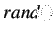

Next: Issues with Step Test Up: PRBS Modeling and Implementation Previous: PRBS Modeling and Implementation
Similar to Chapter 2 and 3, we will find the transfer function model of SBHS. But there are two major differences. First difference is that we will give a Pseudo Random Binary Sequence to the heater input of SBHS and the second difference is that we will find the discrete time transfer function. A Pseudo Random Binary Sequence is nothing but a signal whose amplitude varies between two limits randomly at any given time. An illustration of the same is given in figure 7.4. A PRBS signal can be easily generated using the  function in Scilab. Scilab code to generate the PRBS signal is given at the end of this chapter.
We have used Scilab with Xcos as an interface for sending and receiving data. This interface is shown in figure 7.1. Heater current and fan speed are the two inputs to the system. The heater current is varied with a PRBS signal. A provision is made to set the parameters like PRBS amplitude and offset value. A provision is also made to time the occurance of the PRBS input using a step block. The value of step time in the step block has to be chosen carefully. Sufficient amount of time should be given to allow the temperature to reach a steady-state before the PRBS signal is applied. In this experiment we are keeping the fan speed constant at 50%. The temperature profile thus obtained is the output.